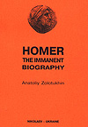
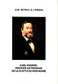

Книги изданные членами Пушкинского клуба
Новинки
Книги изданные А. И. Золотухиным

Анатолий Золотухин,
«Неизвестное о Пушкине»
Николаев, Издательство Ирины Гудым
2005. 208 стр. 98 илл.


Издательство «Возможности Киммерии», 2006 г. книга на английском языке «HOMER. THE IMMANENT BIOGRAPHY» by Anatoliy Zolotukhin (Золотухин А.И. «Гомер. Имманентная биография»), 116 стр.
Издательство «Возможности Киммерии», 2006 г. книга на английском языке «HOMER. THE IMMANENT BIOGRAPHY» by Anatoliy Zolotukhin (Золотухин А.И. «Гомер. Имманентная биография»), 116 стр.

Книги изданные Т. К. Пересунько
Издательство Ирины Гудым, книга профессора Т. К. Пересунько «Всеволод Мейерхольд – гений и злодейство» (112 с., 61 ил.).
Книга Г.И. Пинигина

Издательство Ирины Гудым, книга на французском языке (компьютерный макет Золотухин А.И.) Книга является переводом ранее выпущенной книги Г.М. Петрова и Г.И. Пинигина «Карл Кнорре – первый астроном Черноморского флота».
Издательство Ирины Гудым, книга на французском языке (компьютерный макет Золотухин А.И.) Книга является переводом ранее выпущенной книги Г.М. Петрова и Г.И. Пинигина «Карл Кнорре – первый астроном Черноморского флота».